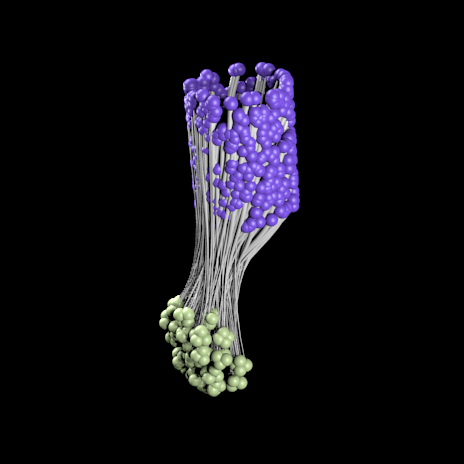

Getting started¶
Once the AddOn is installed, you can locate the panel on the bottom left side of Blender window. Your next step is to upload the relevant network description file, set desired model scaling and press “Parse”. Parsing can take up to several minutes, depending on your file’s size. After parsing is complete, additional options for manipulating the model will be enabled.

Generating your 3D models¶
To generate a network model, the following NeuroML2 extensions are supported:
- .net.nml
- .xml
These files can be parsed with this AddOn and then rendered using Blender tools. The image below illustrates a possible outcome.
Note: the camera and light sources have to be positioned manually.

To generate a cell model, the following NeuroML2 extension is supported:
- .cell.nml
These files can be parsed directly or as includes in .net.nml files.
{kind=link}
Source file for the model: http://www.opensourcebrain.org/projects/blue-brain-project-showcase/models
Model manipulation¶
Once the model has been created, there are multiple posibilities to draw attention to a specific population of interest:
- pull projections between all populations into a “sand-clock” form.
- assign random colors to specific populations.
These options are available under “Model manipulation” tag in the panel.
{kind=link}
Animation¶
For model animation, the following file extensions are supported:
- .st
- .cmp
These files contain descriptions regarding which neuron fires at which time point. You can customize your animation by picking a color map or rotating the camera around the model. Once you checked the Camera Rotation checkbox, you can adjust the duration of a camera single rotation around the object by using a provided slider in the panel. You can also adjust the radius of the camera trajectory by selecting the path and pressing ‘S’. The camera points to the center of mass of your model. If you wish to change that, you can move the ‘Empty’ to the desired position and camera will follow.
Blender console¶
This AddOn can also be used for quick prototyping of a network if you don’t have a NeuroML2 file at hand.
Open the Blender Python console and type the following:
>>> from neuron_visualization_addon.model.Cell import Cell
>>> # Create cells
>>> cell_1 = Cell('ExampleCell1', location=(1,1,0))
>>> cell_2 = Cell('ExampleCell2', location=(-1,1,0))
>>> cell_3 = Cell('ExampleCell3', location=(0,0,1))
>>> # Create axons
>>> cell_1.drawAxon(0.2,cell_2)
>>> cell_2.drawAxon(0.2,cell_3)
>>> # Animate the cells
>>> cell_1.setSpike(10, 1)
>>> cell_2.setSpike(20, 1)
>>> cell_3.setSpike(20, 0.5)